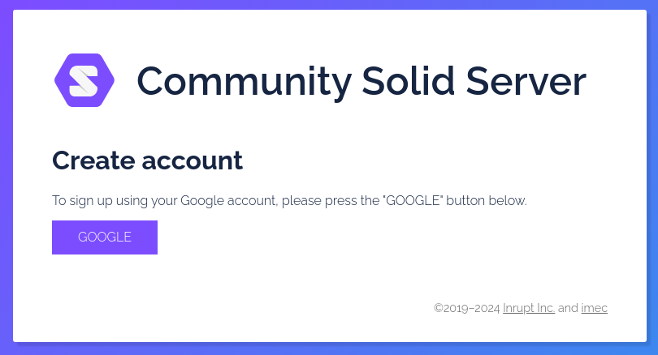
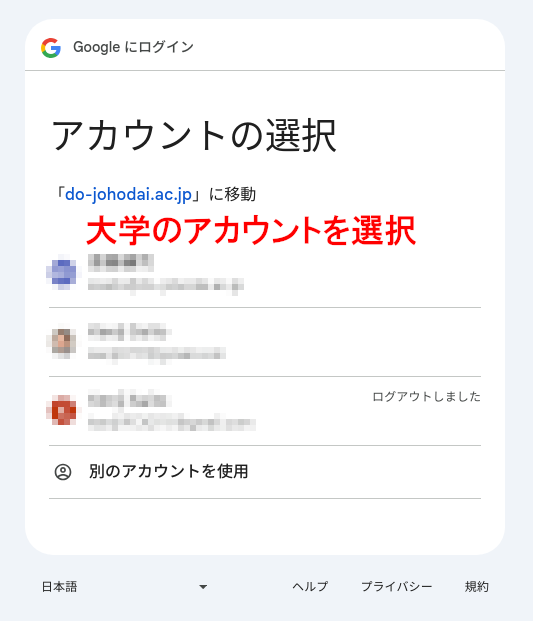
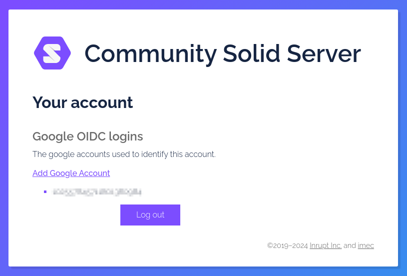
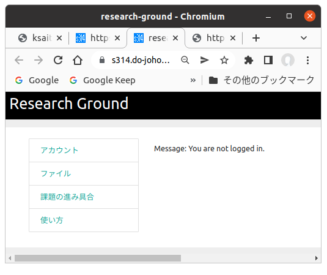
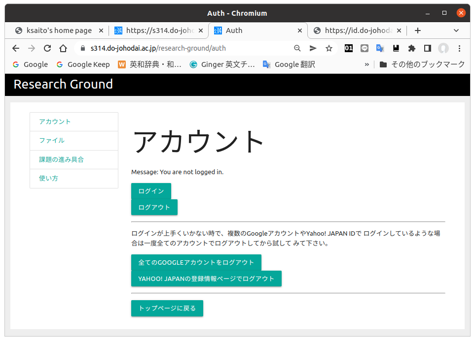
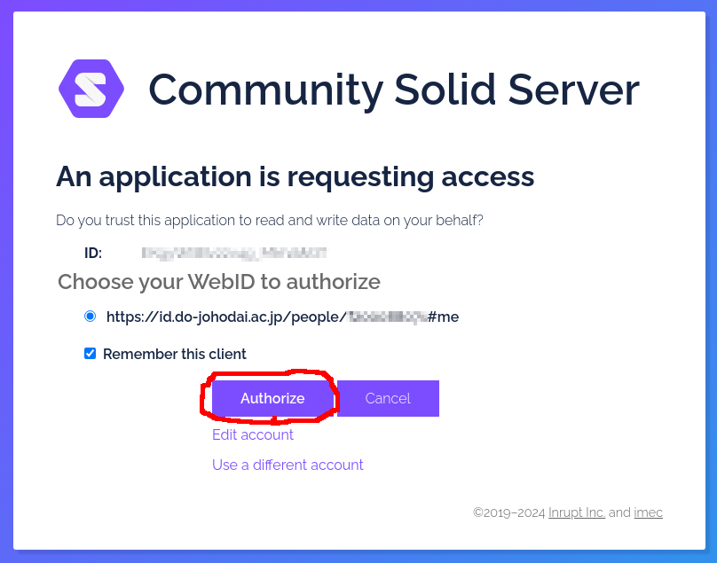
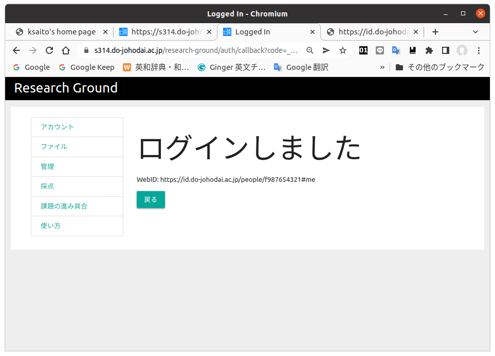

ユーザー登録
Research Groundを利用するには初めに一回だけ 簡単なユーザー登録作業が必要になります。 Research Groundの認証は外部の認証サーバーを 使用しているのでアドレスがちょっと変りますが 間違いではありません。まず以下のリンク先の ページを開いて下さい。
- idsrv2 google register
以下のような画面が表示されます。

この認証サーバーでは新にユーザー名やパスワードを登録して もらうかわりに、大学のメールを読む時に使用しているGoogle アカウントを使用します。
次に「Googleアカウントで自動登録」をクリックして下さい。 ここから先は人によって表示される画面が異なることがあります。 以下の画面のようにGoogleにログインするためのメールアドレスを 入力する画面が出てきたり、Googleアカウントの一覧が出て 選択する画面になったりします。

いずれの場合でもGoogleアカウントの情報を入れてログインする ことになりますが、ここで間違わないで下さい。必ず大学の メールを読む場合のGoogleアカウントを選択すしてログインして 下さい。途中でいくつかの権限の許可を求める画面が出るかも しれませんが、全て許可して下さい。
登録が完了すると以下のような画面が出てきます。

以後Reserch Groundのシステムでログインが可能になります。 実際にResearch Groundにログインしてみましょう。以下の リンクをクリックしてResearch Groundのトップページを開き ます。
- Research Groundトップページ
以下のような画面が表示されます。

「アカウント」のリンクをクリックすると以下の画面に移行します。

この画面で「ログイン」を押してログインして下さい。 いくつかの画面を経て以下の画面が出てきたら「Authorize」を押して下さい。

その後、以下のようにResearch Groundの方で認証が完了します。

以上の操作が上手くいかない原因として、大学のGoogleアカウント ではなく、個人で作って使用しているGoogleアカウントで ログイン済みであることが考えられます。その場合は以下の リンクをクリックして全てのGoogleアカウントからログアウト してみてから、もう一度試してみて下さい。
このリンクはアカウントの登録画面や、Research Groundのログイン 画面の少し下の方にもあります。クリックするとブラウザに別のタブが 表示されると思いますが、それが表示されればログアウト完了なので すぐに閉じてしまってかまいません。